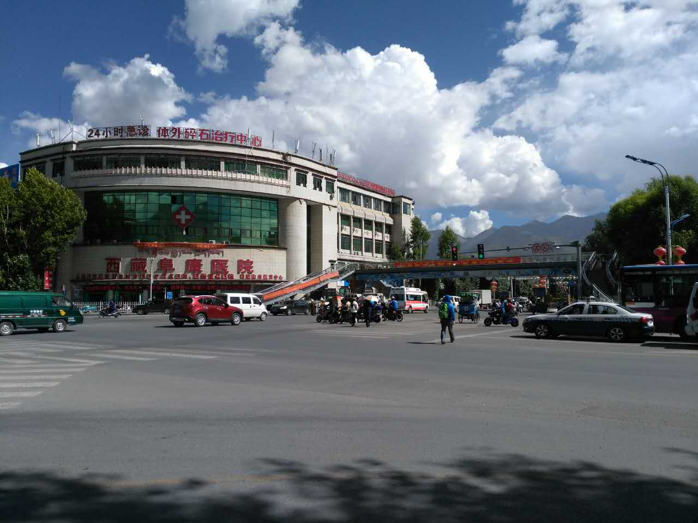

西藏商报

商报讯（记者 张雪芳）8月10日，记者从拉萨市公安局交警支队获悉，根据拉萨市迎藏博会环境综合整治工作指挥部的要求，2016年7月15日至9月20日期间，拉萨市公安局交警支队将对城市交通、道路运输等违法违规行为进行集中整治。
拉萨市各级公安交警部门将加强“三超一疲劳”、酒驾、醉驾等交通违法专项整治行动；坚决杜绝乱停、乱靠、乱搭客、乱掉头、违规行驶等现象；同时提高事故多发路段及旅游线路的查处力度
据悉，交警部门还将协同拉萨市交通综合执法支队开展整顿路面秩序、打击黑车等工作。